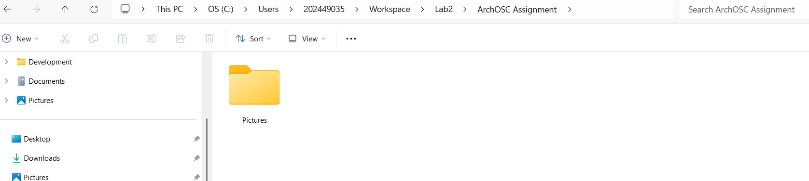
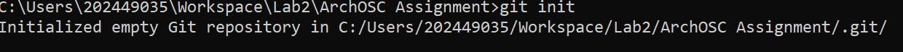
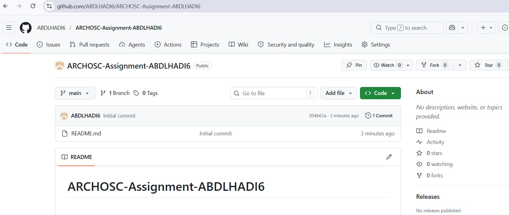
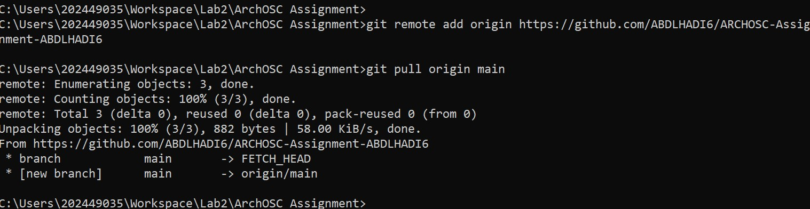
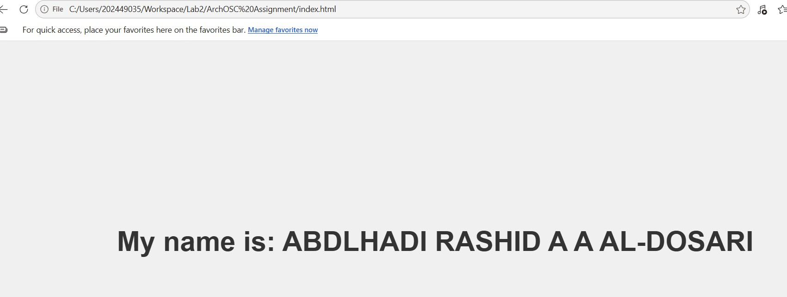
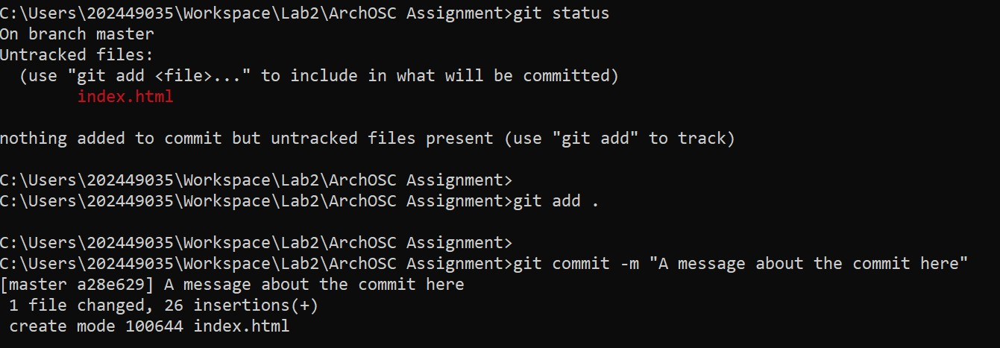
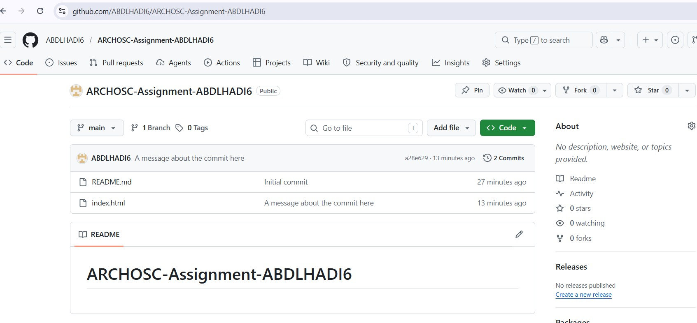
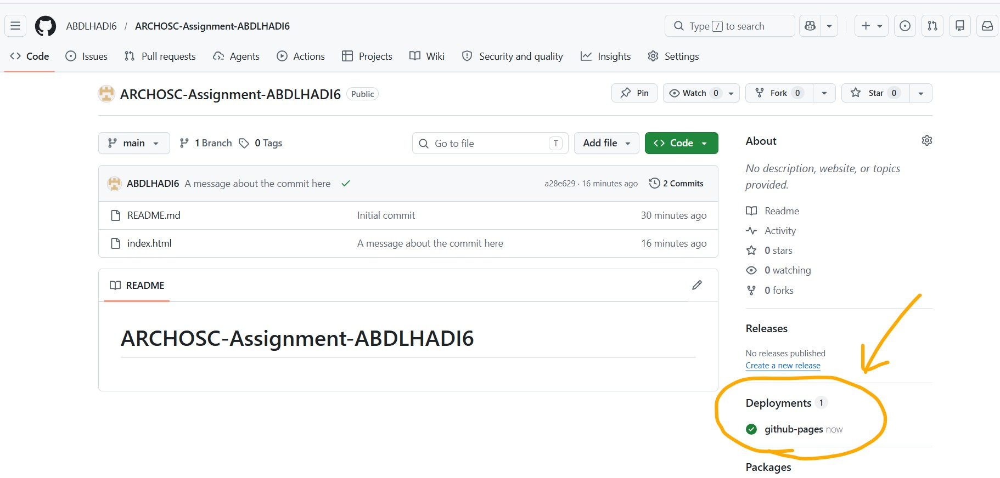
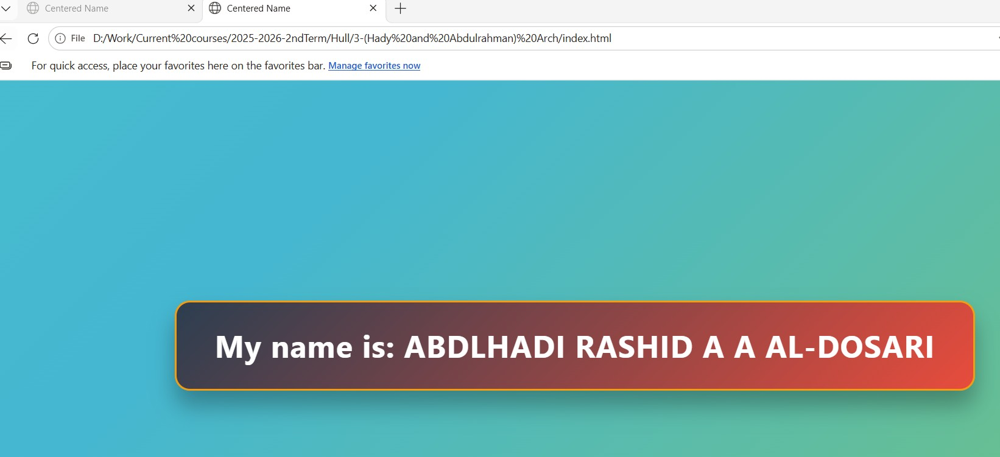
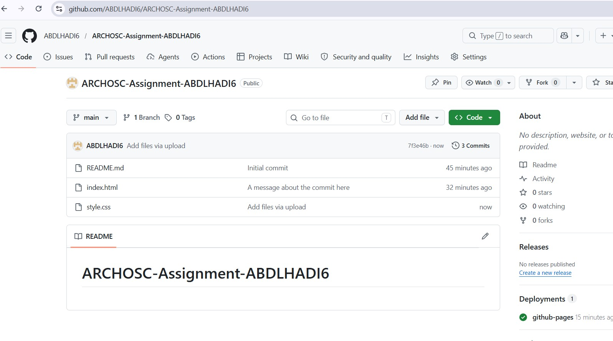

Section 1: Creating a Local Repository and Workspace Setup
We established a secure local development environment by navigating to the Workspace folder on the C: drive. I created a project directory named ArchOSC Assignment and a Pictures sub-folder to store my lab evidence.

Section 2: Initializing Git and GitHub Setup
I opened the Windows Terminal in our project folder and ran git init to initialize the local repository. I then created a private repository on GitHub titled ARCHOSC-Assignment-ABDLHADI6.


Section 3: Linking Local and Remote Repositories
We linked the local and remote repositories using the git remote add origin command. I then executed a git pull with the --allow-unrelated-histories flag to sync the GitHub README to my local machine, authenticating via the browser when prompted.

Section 4: Website Development and Initial Commit
Using Visual Studio Code, I created an index.html file with a centered heading. After verifying the site in a browser, I used git add . to stage the file and git commit -m to save the changes to my local history.


Section 5: Pushing to GitHub and Deployment
I renamed our local branch to "main" and used git push to upload the code to GitHub. Finally, we enabled GitHub Pages in the repository settings to host the website live on a public URL.
git remote add origin https://github.com/ABDLHADI6/ARCHOSC-Assignment-ABDLHADI6


Section 6: Enhancements and Final Reflection
I customized the website with basic CSS and HTML changes, then pushed the updates to the repository.
Reflection: We learned the essential professional workflow of version control and cloud synchronization. This process is critical in the industry for team collaboration and maintaining code integrity. Using GitHub Pages also introduced us to the basics of automated deployment.

